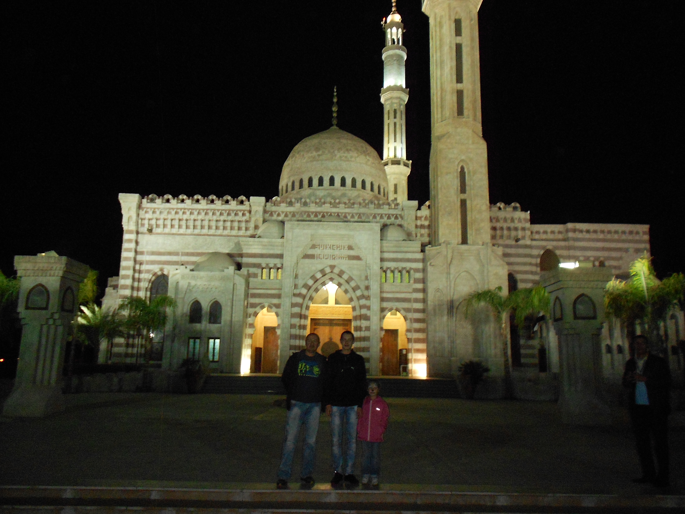

Єгипет - країна Африки, одна з відомих курортних країн для нас. Більшість українців, які приїжджають до Єгипту, відпочивають пасивно, основну частину свого часу проводять біля моря та басейну в готелях. Лише частина наших співвітчизників приїздить в Єгипет задля екскурсій, пізнання самого Єгипту та його культури. Я з батьками також відпочивала в Єгипті декілька разів та можу висловити декілька думок. Єгипет - країна туристична. Його можна порівняти з оазисом, що лежить між двох пустель. Клімат Єгипту можна охарактеризувати в цілому, як жаркий і сухий. У районах узбережжя Середземного і Червоного моря клімат можна характеризувати як середземноморський, субтропічний, на решті території країни клімат жаркий та пустельний. Проживання в такому жаркому кліматі не таке комфортне, як в будь-якій європейській країні. Ми зупинялися в курортному містечку Шарм-ель-шейх. На узбережжі цього міста розташовано безліч готелів, пляжів, місць відпочинку туристів з усього світу. Я відвідувала Старе місто зі східним базаром - один з найстаріших районів Шарм-ель-шейху, плавала на катері на коралові рифи острову Тиран, відвідувала мечеть городу Эль - Мустафа та милувалася неймовірною красотою Коптської православної церкви в Шарм-Ель-Шейху. На жаль на екскурсію до пірамід Каїру ми не змогли попасти, але я надіюсь, що в майбутньому мені вдасться там побувати.
